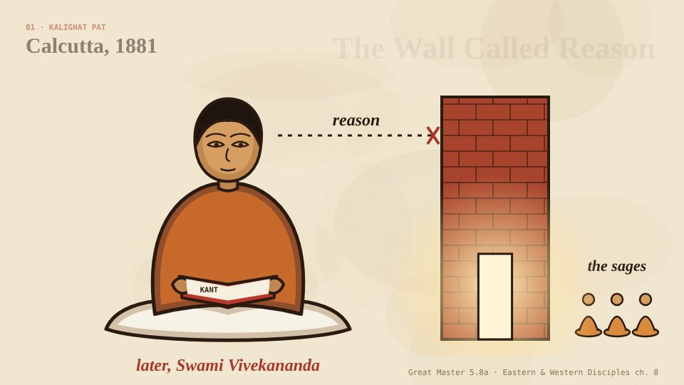
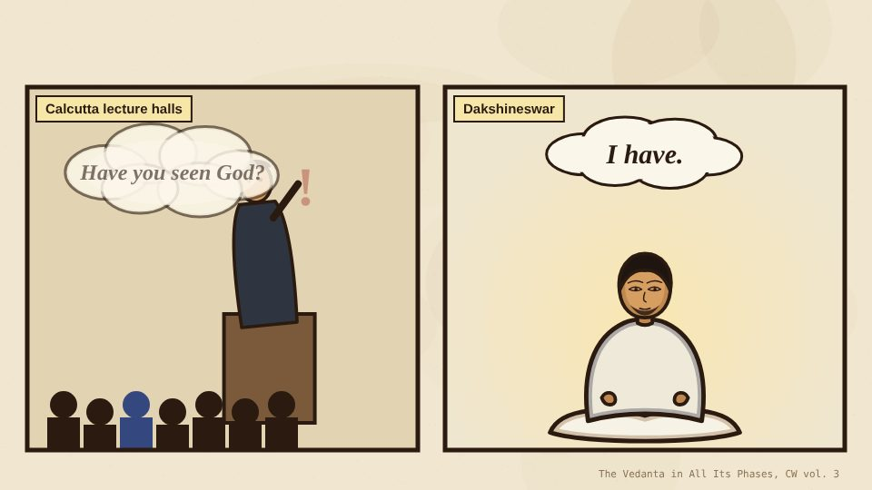
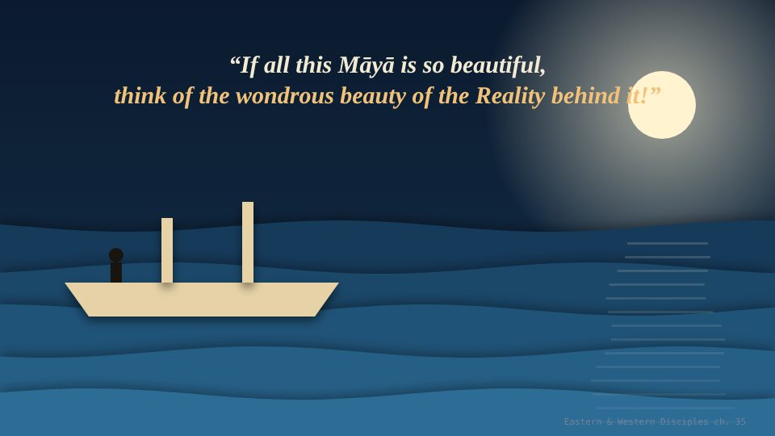

Kant said reason hits a wall. Vedanta asked what lies past it.
Three short narrated animations about one idea: that time, space and causation belong to the mind. Kant argued it in 1781. Vivekananda said India's sages had found it long before, and had gone looking for what lies beyond. Watch them in order, about fourteen minutes in all.

The Wall Called Reason
The idea itself. X plus mind, the rope and the snake, why will cannot be the Absolute, neti neti, and Shankara's claim to have got there first.

The Student Who Read Kant
The man. Naren in Calcutta, from Mill and Hume to Kant and Schopenhauer, walled in by time and space, asking every lecturer one question.

Kant Comes Home
The journey. Baranagore, the Upanishads travelling west into Persian, Latin and German, Deussen at Kiel, the London lectures on Māyā, and the 1899 voyage.
Seven styles, one job each
Sources
Every line of narration comes from these pages on ramakrishnavivekananda.info. Each chapter in the films names its source.
- The Reality and the Shadow
- Buddhism and Vedanta
- Inspired Talks, 14 July 1895
- Introduction to Jnana-Yoga
- Raja-Yoga, Introduction
- Vedantism (Khetri, 1897)
- Nivedita: The Swami on Hinduism
- Sri Ramakrishna the Great Master, 5.8a
- Vedic Religious Ideals
- The Vedanta in All Its Phases
- Calcutta Address and Reply
- Eastern & Western Disciples, ch. 8
- ch. 12: The Baranagore Math
- ch. 19: In Madras and Hyderabad
- Biography: As a Wandering Monk
- Gospel: With the Devotees at Dakshineswar (II)
- Biography: Experiences in the West
- ch. 35: Second Visit to America